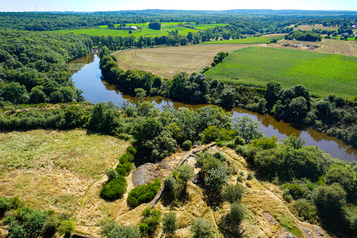

le chateau de Boutavent est situé à Iffendic, il a été édifié sur un éperon rocheux au Moyen-Age. Le domaine s'étend sur plus de deux hectares composés d'un château, d'un massif forestier de Paimpont et de l'étend de Boutavent
il est aujourd'hui en ruine, il est ouvert au public depuis 2005. En 2006 ont été découvert des objets suite à des fouilles, des fouilles ont encore lieu aujourd'hui à toi de le trouver!

